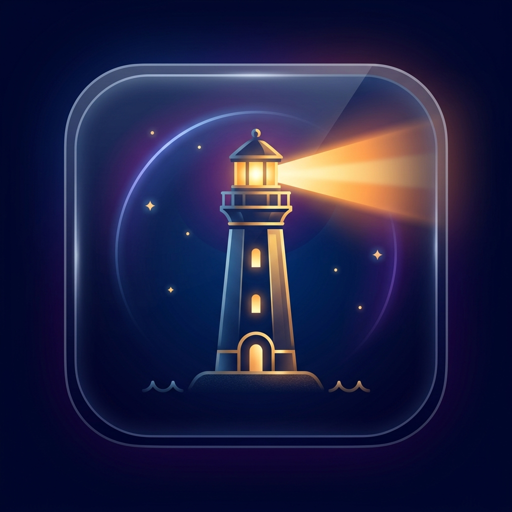

🚨 PWA OFICIAL • ACCESO INDEPENDIENTE 24/7

FARO
Tu Seguridad, Tu Luz. Sistema de respuesta rápida, botón SOS de 1 toque, geolocalización de emergencias y modo nocturno.
🚀
Abrir Web App Directamente
PWA Offline-First • Android & iOS • Sin registro obligatorio
🛡️ BLINDAJE DE SEGURIDAD PERSONAL:
🔴
Botón de Pánico SOS: Alerta inmediata sonora y visual de alta intensidad en 1 solo toque.
📍
GPS en Tiempo Real: Envío de coordenadas precisas con enlace directo de Google Maps a tus contactos.
🔦
Linterna Estroboscópica: Destello de auxilio y luz SOS intermitente de máxima visibilidad.
🔋
Modo Offline Soberano: Funciona incluso si te quedas sin conexión o datos móviles.
- Abre Faro en Google Chrome o Samsung Internet.
- Toca el botón "Instalar en tu Celular" arriba o pulsa los tres puntos (⋮) del navegador.
- Selecciona "Instalar aplicación" o "Añadir a la pantalla de inicio".
- ¡Listo! Faro quedará como una app nativa en tu celular con icono propio.
- Abre Faro desde el navegador Safari en tu iPhone.
- Toca el botón Compartir (el cuadrado con la flecha hacia arriba ⎋ en la barra inferior).
- Desplázate hacia abajo y pulsa "Añadir a la pantalla de inicio" (➕).
- Toca "Añadir" arriba a la derecha. Ya tendrás Faro lista en tu pantalla de inicio.
- Abre Faro en Google Chrome o Microsoft Edge.
- Haz clic en el icono de Instalar (pantalla con flecha) que aparece en la barra de direcciones.
- Confirma la instalación para ejecutar Faro como ventana de escritorio independiente.
📦 Descargar Paquete de Respaldo ZIP (Código Fuente & Offline)